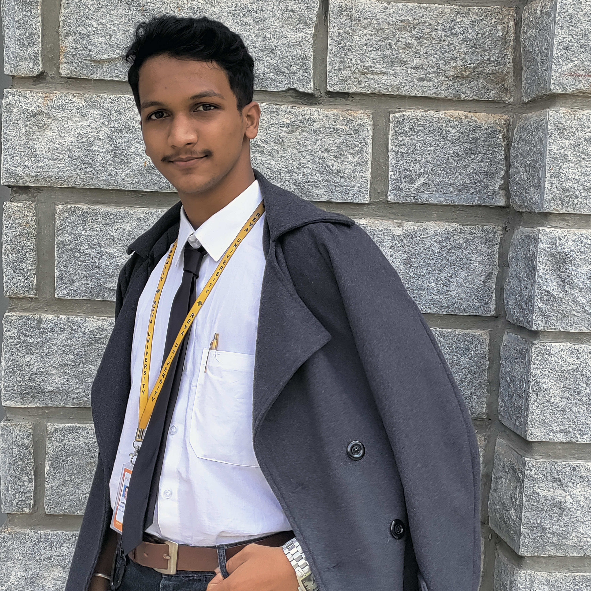
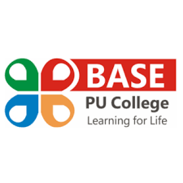

Multidisciplinary Engineer
I approach my work with enthusiasm, professionalism, and a passionate dedication that reflects in my results. Actively pursuing learning and implementation with a focus on excellence, I proactively develop a profound understanding of diverse fields of study to enhance my contributions in any work environment. My approach, characterized by rapid and independent learning, ensures efficiency in handling tasks with precision and effectiveness.
Education

I approach my work with enthusiasm, professionalism, and a passionate dedication that reflects in my results. Actively pursuing learning and implementation with a focus on excellence, I proactively develop a profound understanding of diverse fields of study to enhance my contributions in any work environment. My approach, characterized by rapid and independent learning, ensures efficiency in handling tasks with precision and effectiveness.

I approach my work with enthusiasm, professionalism, and a passionate dedication that reflects in my results. Actively pursuing learning and implementation with a focus on excellence, I proactively develop a profound understanding of diverse fields of study to enhance my contributions in any work environment. My approach, characterized by rapid and independent learning, ensures efficiency in handling tasks with precision and effectiveness.
Projects
We implemented the principles of Darwinism into the training and development of neural networks to produce a self-evolving neural network. Click on the link above to know more.
We developed an automated pH meter designed to collect and load sample data live onto a cloud-based platform. Click on the link above to download the patent grant.
Microgravity Simulator
A clinostat designed cheaper with the same efficacy and efficiency as a lab-tested and qualified clinostat and conducted microbial research on stress-induced mutagenesis.
Achievements and Internships
Artificial Intelligence and Machine Learning Developer (2023)
I was hired on a contract basis in a biomedical startup, developing AI and ML codes for various disease identification and classification. I was also solely involved in data analysis, dataset creation, and every aspect of the process. I managed to finish the contract in a record time of 1 month, with very high reviews from my contractor.
Kavach Hackathon (2023)
I was selected to represent my university in a hackathon for cybersecurity (2023) in an upcoming national-level hackathon in July.
Bioinformatics and Microbiology Intern at TDU (2023)
I worked chiefly on pharmaco-network analysis of an ancient Ayurvedic medicine called Vilwadi Gulika. We aimed to identify all the metabolites from each of the ingredients used to make the medicine and map the metabolites to their targets and the diseases they help in curing.
I also worked in bioinformatics analysis and microbiology, with the aim of identifying the presence and isolation of various microbes present in the medicine that could aid or be the cause of some of its medicinal properties.
Cytecare Cancer Hospital as Biomedical Intern (2022)
I worked as a Biomedical intern at Cytecare Cancer Hospital. Involving myself in learning about various biomedical instruments and their capabilities and drawbacks. I was assigned specifically to the ICU unit and helped in managing and monitoring all the instruments.
Online Certifications
Full Stack Web Development
Course for beginner to intermediate level web development from Udemy online coaching.
Ethical Hacking and Cyber Security
Course for intermediate level ethical hacking and cybersecurity from Udemy online coaching.
Protein Engineering and Drug Development
Use of software such as AutoDock, SwissADME, ArgusLAB, drug screening and development software, etc.
Coursework and Skills
Computer Programming
Fullstack Web Development
Java Programming
Python Programming
R Programming
AI and ML Development
Electronics Engineering
Bio MEMS
IoT
Microcontroller and Microprocessor
Control Systems
Signal Processing
Biomedical and Bioinformatics
Biomedical Instrumentation
Pharmaco-networking
Human Anatomy and Physiology
Biostatistics
Protein Engineering
Immunoinformatics and Immunotechnology
Biochemistry